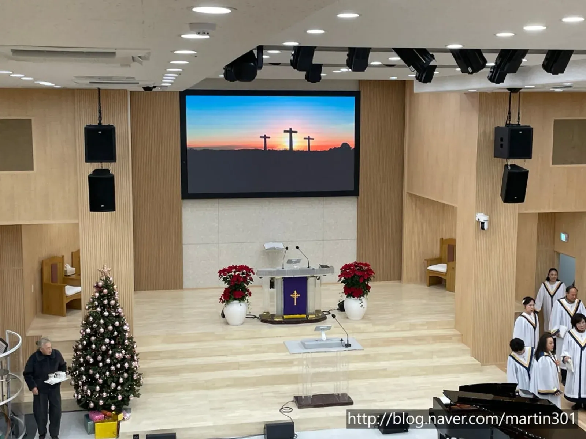
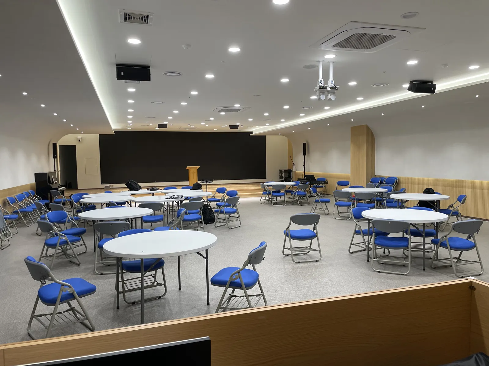
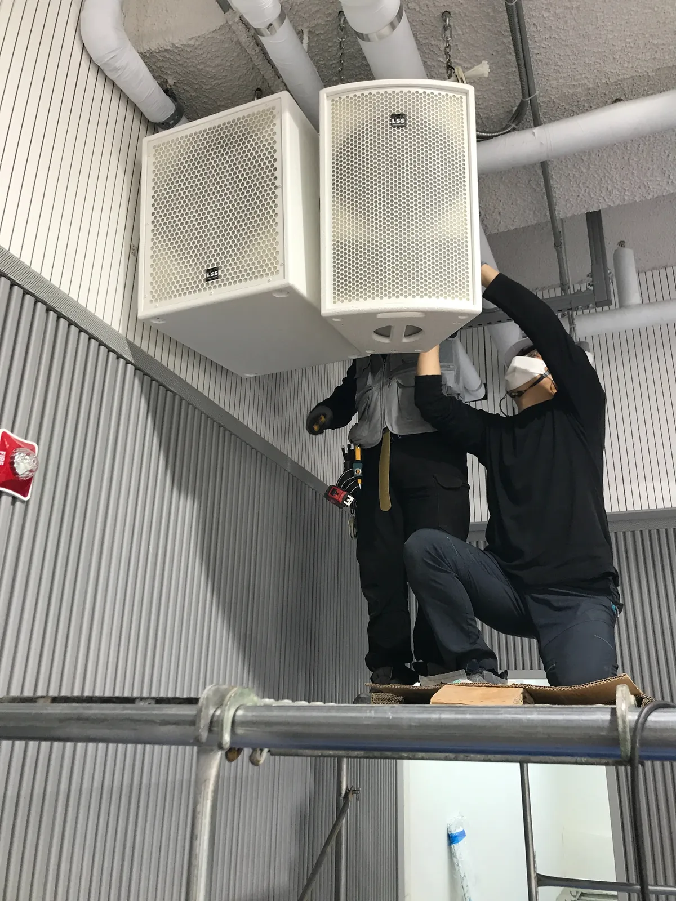

포천 교회 음향 교체는 「무엇이 문제인지」를 먼저 점검하고 「어디까지 바꿀지」를 정하는 순서로 가면 비용과 시간이 덜 듭니다. 모든 장비를 한 번에 바꾸기보다, 소리가 나빠진 원인을 찾아 필요한 부분부터 바꾸는 것이 기본입니다. 제이식스미디어가 포천 태광성서교회 음향을 점검 · 교체한 현장과 서울 이문동교회 리모델링을 바탕으로, 상담 전에 교회가 정리해 두면 좋은 것을 정리했습니다.

- 교체 상담 전에 지금 쓰는 스피커 · 앰프 · 믹서 · 마이크의 이름과 대략의 사용 기간, 불편한 점을 적어 둡니다.
- 본당만이 아니라 교육관 · 주일학교 부서 · 찬양팀 연습실까지 바꿀 범위를 정하면 장비 구성이 정확해집니다.
- 전광판 · 영상장비처럼 아직 쓸 수 있는 장비는 다시 쓰는 방법도 함께 따져 봅니다.
- 설치가 끝나면 사용법 안내와 이후 점검 일정까지 확인해 두어야 오래 좋은 소리를 유지합니다.
1. 포천 교회 음향 교체, 점검이 먼저입니다
「소리가 예전 같지 않다」는 느낌만으로 장비를 통째로 바꾸면 돈은 많이 들고 문제는 남을 수 있습니다. 스피커가 낡은 것인지, 앰프 출력이 모자란 것인지, 믹서 설정이나 배선이 문제인지에 따라 해법이 다릅니다. 그래서 교체 상담은 지금 장비를 점검하는 데서 시작합니다.
포천 태광성서교회는 교회음향 지원사업으로 음향을 점검하고 교체한 현장입니다.
| 증상 | 먼저 의심할 곳 | 점검할 것 |
|---|---|---|
| 설교가 뒷줄에서 안 들림 | 스피커 위치 · 각도 · 수 | 스피커가 객석 뒤까지 향하는지, 딜레이 스피커가 있는지 |
| 소리가 찢어지거나 지직거림 | 스피커 · 앰프 · 케이블 | 특정 스피커만 그런지, 음량을 올릴 때만 그런지 |
| 하울링이 자주 남 | 스피커와 마이크 위치, 믹서 설정 | 강단 마이크가 스피커 앞에 있는지 |
| 무선마이크가 끊김 | 수신기 위치 · 안테나 · 배터리 | 끊기는 자리가 정해져 있는지 |
| 찬양팀이 자기 소리를 못 들음 | 모니터 구성 | 모니터 스피커 수와 자리 |
2. 상담 전에 교회가 적어 둘 것
제이식스미디어 문의 안내에는 설비 상담 때 「공간의 크기와 쓰임, 지금 쓰시는 장비」를 알려 달라고 적혀 있습니다. 아래 목록을 채워 사진과 함께 보내 주시면 상담이 빨라집니다.
- 본당 크기(앞뒤 · 좌우 길이, 천장 높이)와 좌석 배치 사진
- 지금 쓰는 스피커 · 앰프 · 믹서 · 무선마이크의 이름(장비 뒷면 사진이면 충분합니다)
- 예배 순서 — 설교만인지, 찬양팀 밴드가 있는지, 영상 송출 · 방송을 하는지
- 가장 불편한 점 세 가지(예: 뒷줄이 안 들림, 하울링, 찬양팀 모니터)
- 바꾸고 싶은 범위 — 본당만인지, 교육관 · 부서실까지인지
- 공사가 가능한 요일과 시간(주일 예배에 지장 없게)

3. 바꿀 범위를 정합니다 — 본당, 부서, 연습실
교회 음향은 본당만의 일이 아닙니다. 서울 이문동교회 리모델링은 본당과 주일학교 부서 6곳의 음향 · 영상을 함께 바꿨습니다. 현장 설명회 때부터 교회가 본당만큼 아이들 부서도 신경 써 달라고 부탁했고, 마지막으로 찬양팀이 밴드 연습과 레슨을 하는 합주실 장비까지 마무리했습니다.
| 공간 | 주로 쓰는 일 | 챙길 장비 |
|---|---|---|
| 본당 | 예배 · 설교 · 찬양 | 메인 스피커, 뒤쪽 딜레이 스피커, 모니터, 믹서, 무선마이크 |
| 교육관 · 부서실 | 주일학교 예배 · 모임 | 천장 스피커, TV · 프로젝터, 간단한 믹서 |
| 찬양팀 합주실 | 연습 · 레슨 | 모니터, 악기 연결, 작은 믹서 |
| 방송 · 영상 | 송출 · 자막 | 영상장비, 화면, 방송 장비 |
이문동교회 본당은 메인 스피커 LSS SP530과 PSUB1, 뒤쪽 딜레이 스피커 LSS MIL130 5대, 믹서 MIDAS M32와 DL16, 무선마이크 SHURE SLXD 8대로 구성했습니다. 교회마다 공간과 예배 방식이 달라 구성은 달라지지만, 「본당 뒤쪽까지 소리를 보낼 딜레이 스피커가 필요한가」는 넓은 본당에서 꼭 따져 볼 질문입니다. 자세한 내용은 이문동교회 리모델링 이야기에 있습니다.
4. 쓸 수 있는 장비는 다시 씁니다
교체라고 해서 모든 것을 새로 살 필요는 없습니다. 이문동교회에서도 스피커와 앰프는 새로 바꿨지만 전광판과 영상장비, 모듈레이터 등은 기존 장비를 다시 쓴 것이 많습니다. 점검에서 상태가 괜찮은 장비는 남기고, 소리에 가장 큰 영향을 주는 부분에 먼저 투자하는 편이 낫습니다.
- 점검 결과를 장비별로 「계속 쓰기 · 손보기 · 바꾸기」로 나눕니다.
- 바꾸기 목록 중 소리에 가장 큰 영향을 주는 것(스피커 · 앰프 등)부터 순서를 매깁니다.
- 한 번에 다 못 하면 본당 → 부서실 → 연습실처럼 단계로 나눠 일정을 잡습니다.

5. 설치 뒤 사용법과 점검까지 확인합니다
제이식스미디어는 공간의 크기와 쓰임에 맞춰 장비를 제안하고, 설치 · 조정 · 사용법 안내까지 마칩니다. 설치 뒤에도 점검과 관리로 오래 좋은 소리를 유지하도록 돕습니다. 교회 쪽에서는 방송 담당 봉사자가 바뀌어도 쓸 수 있도록 사용법을 기록으로 남겨 두는 것이 중요합니다.
6. 포천 교회 음향 견적 문의 전에 정리할 것
남양주 별내 사무실에서 포천시청까지 차로 약 30분 · 35.8km(막히지 않을 때 기준)입니다. 자동 견적서에서 항목을 골라 보내 주시면 확인 후 안내합니다. 견적서에는 단가가 「협의」로 나오고, 현장을 확인한 뒤 확정 견적을 보냅니다.
| 자동 견적서 항목 | 언제 고르나 |
|---|---|
| 교회 음향 · 영상 시스템 | 본당 · 교육관 · 예배실 음향 · 영상을 새로 설치하거나 리모델링할 때 |
| 점검 · 튜닝 · 유지보수 | 지금 장비를 먼저 점검하고 손볼 때 |
| 방송 · 영상 장비 | 예배 송출 · 영상 장비가 필요할 때 |
| 출장비 | 현장 방문 점검이 필요할 때 |
지역 안내는 포천 음향 · 설치 안내, 수련회 음향은 남양주 교회 수련회 음향 글에 정리했습니다.
자주 묻는 질문
장비를 전부 바꿔야 하나요?
점검 결과에 따라 다릅니다. 상태가 괜찮은 장비는 남기고 소리에 큰 영향을 주는 부분부터 바꾸는 방법을 함께 따져 봅니다.
예배 중에 공사를 하나요?
공사가 가능한 요일과 시간을 알려 주시면 주일 예배에 지장이 없도록 일정을 맞춥니다.
설치 뒤 문제가 생기면 어떻게 하나요?
자동 견적서의 「점검 · 튜닝 · 유지보수」 항목으로 문의해 주세요. 설치 뒤에도 점검과 관리로 좋은 소리를 유지하도록 돕습니다.